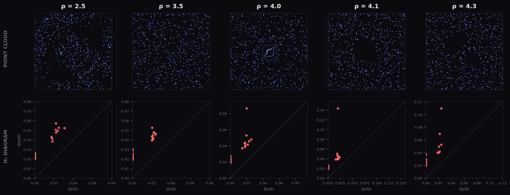

Demo · PLACE classification engine
From persistence diagrams to certified predictions, in two lines.
A live walk-through of PLACE — the closed-form Persistence-Landmark Analytic Classification Engine — on the Orbit5k benchmark. The descriptor and filtration are fixed analytically from the training labels — no cross-validation on those axes. (Structural choices such as the landmark budget and bandwidth are a different matter; see the note below.)
From "A Closed-Form Persistence-Landmark Pipeline for Certified Point-Cloud and Graph Classification" · Bagchi, Majhi, Mitra, Virk · TMLR 2026 (under review).
The dataset
Orbit5k — five dynamical systems, one topology problem.
5,000 point clouds in $[0,1]^2$, 1,000 per class, generated by iterating a 2-D dynamical system at five parameter values $\rho \in \{2.5, 3.5, 4.0, 4.1, 4.3\}$. The harder classes ($\rho = 4.0, 4.1, 4.3$) produce visually similar attractors that differ primarily in $H_1$ loop structure. The task: predict $\rho$ from the point cloud.

Stage 1 — Compute persistence
The α-complex filtration, batched.
Every point cloud becomes a multi-set of birth–death pairs in $H_1$. Akriti delegates this to GUDHI under the hood; the user sees one call.
import akriti diagrams = akriti.persistence(point_clouds, filtration="alpha", dim=1) # 5,000 diagrams → top-50 most persistent features per diagram (the noise filter).
No max_edge_length to pick. No homology dimensions to enumerate. dim=1 is a hint — Akriti would auto-select if omitted. The top-50 persistence filter is a single closed-form choice that strips noise without truncating the signal.
Stage 2 — PLACE embedding
Sum hat-functions over a landmark grid. Closed form.
Each diagram is embedded as $\Phi(A) = \bigl(w_k \cdot 2^{-3/2} \sum_{a \in A} \varphi_{R_k, p}(a)\bigr)_{k=1}^N$ — a concatenation of single-scale sums of compactly-supported hat coordinates. Linear in the diagram measure. The block weights $w_k$ are the unique maximizer of the bi-Lipschitz distortion slope:
No optimizer. No grid search. The same formula gives the optimal weights every time.
features = akriti.embed(diagrams, method="place", scales=10) # features.shape == (5000, ℓ) with ℓ = O(M·N) ≈ 1366 for Orbit5k
Stage 3 — Linear SVM
A linear classifier in $\mathbb{R}^\ell$. No kernel tuning.
With the embedding fixed analytically, downstream classification is just a linear SVM in the embedded space. The margin-based excess-risk rate
depends on the population class-mean separation $\Delta$ — not on the worst-case bottleneck distance. This is what lets PLACE work on benchmarks where some cross-class pairs are bottleneck-close.
clf = akriti.classify(features, labels, model="linear_svm") # Trains a one-vs-rest LinearSVC. C is selected by inner CV on the training fold # (the only CV in the entire pipeline; bounded to 7 candidates).
Stage 4 — Per-prediction certificates
Decided once, at training time.
Akriti's certificate fires when the empirical class-mean concentration radius is smaller than half the empirical class-mean gap:
When the certificate fires, the empirical nearest-centroid prediction agrees with the population nearest-centroid prediction on every test input — with probability $\geq 1 - \alpha$. No calibration split. No per-prediction overhead.
predictions = clf.predict(test_features) predictions.labels # the predicted class predictions.certified # bool array — did the certificate fire? predictions.certificate.radius # r_m predictions.certificate.gap # Δ
Stage 5 — Results
Strongest diagram-based method on Orbit5k.
Among all methods that operate on persistence diagrams alone, PLACE achieves the highest accuracy on Orbit5k. Two-parameter Euler methods (which bypass diagrams) and transformer-based Persformer (which learns end-to-end) are stronger but trade away the closed-form / certificate properties.
| Method | Class | Orbit5k acc. | Tuning-free | Per-prediction certificate |
|---|---|---|---|---|
| Persistence images (Adams '17) | Vectorisation | 82.5% | — | — |
| SW-K kernel (Carrière '17) | Kernel | 83.6% | — | — |
| PF-K kernel (Le, Yamada '18) | Kernel | 85.9% | — | — |
| PersLay (Carrière '20) | Neural | 87.7% | — | — |
| PLACE | Closed-form | 87.2% | ✓ | ✓ (PB radius) |
| Persformer (Reinauer '21) | Transformer | 91.2% | — | — |
| ECS+XGB (Hacquard '24) | Two-param Euler | 91.8% | — | — |
The trade. PLACE is statistically indistinguishable from PersLay (the strongest neural diagram-based method) at $p = 0.05$, while ECS+XGB and Persformer beat PLACE at $p < 0.01$ — but at the cost of either bypassing diagrams entirely (ECS) or learning the embedding end-to-end (Persformer). PLACE is the choice when you need provable bounds and per-prediction certificates without surrendering interpretability.
Why this matters
Closed-form everything is the moat.
akriti.classify(X, y).predict(X_test) covers everything. The library decides; the bound is provable; the user writes two lines.- Playground with full dataset upload at try.akriti.io
- Source code (when v0.0.1 ships): github.com/akritihq/akriti
- Paper draft + bibliography: akriti.io / research
MUTAG and graph-classification demos coming next; check back tomorrow.